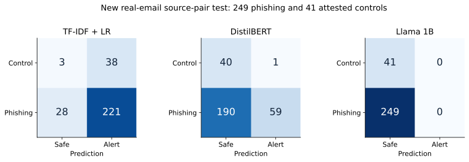
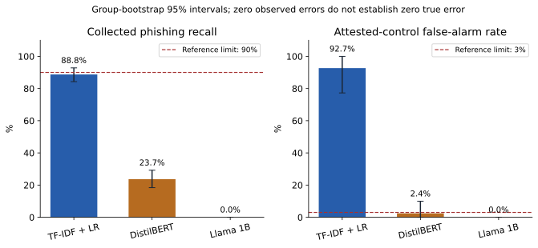
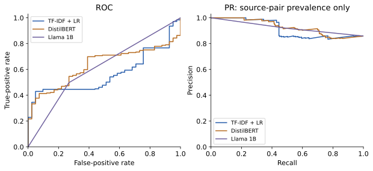
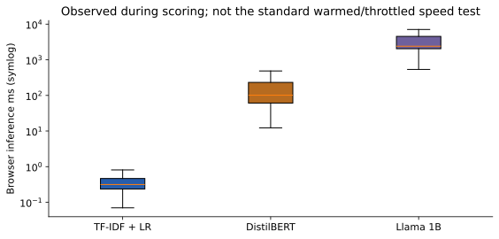

PhishLens real-email operational retest
28 October 2026 · Actual Chrome predictions · Frozen validation thresholds
No qualified winner
All three frozen systems fail measured requirements on the new workload. This finding is a completed test result, not a request for more uploads.
What was tested
249 unused collected publisher-phishing inputs from Nazario 2025, in 223 groups. 41 distinct received/redacted security controls, in 18 suggested groups, with collector-attested legitimate origin. No synthetic attack is included. Positive messages were previously inventoried, with prior scored groups and actual role/checkpoint matches excluded.
This is a convenience source pair. It does not establish inbox-wide precision, independent-source OOD performance, zero bias or a fully local installed-extension deployment. Historical browser matrices remain separate. Llama consistency: 13/30 items had five valid identical labels.
Detailed report · Error analysis · Terminology · Results CSV · Metrics and intervals · Run record




Reason for the result
TF-IDF retained higher phishing recall but falsely alerted on most security controls. Ordinary account/link vocabulary receives positive model weight. DistilBERT missed most collected phishing. Llama retains the frozen zero-slope calibration and fail-open invalid-output policy. A passing declaration would contradict the measurements.
No thresholds, labels or test populations were adjusted to obtain a preferred winner. The software/model export remains reproducible; this artifact is not validated as a reliable automatic protection engine.